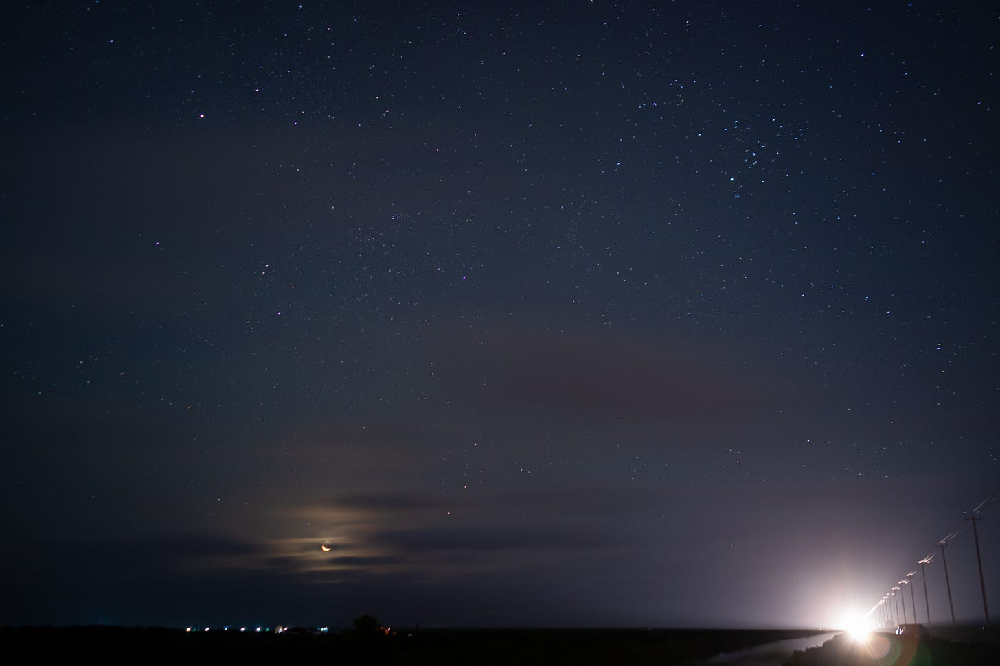

分享一张国内的朋友（不是专业摄影师）前几天拍到的星空照片。注意到地平线上的亮光（车灯）了吗？它很亮，却仍然能拍到很多的星星，几乎无所不在。除了被云挡住的位置，很难找到没有星星的角度。有些人喜欢说需要“长曝光”才能拍到这的场面，这照片用的确实是相机长曝光（25 s）。我估计当时星光不是很明显，因为光污染和空气阻挡，所以需要加长曝光。在英国，我有时候可以用手机，不用长曝光，随手一拍就拍出这样的星空。